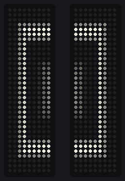
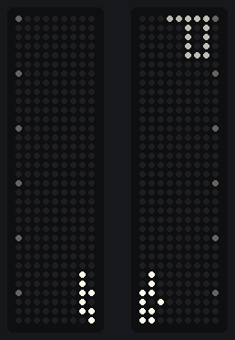
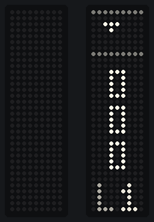
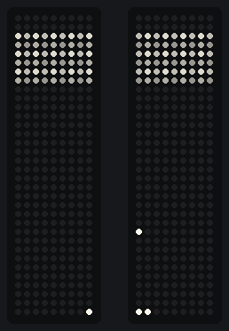
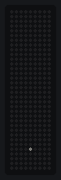
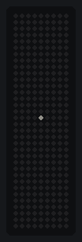

Why one app?
On Windows only one program at a time can talk to an LED panel. Before White Rabbit, changing the startup animation or playing a game meant quitting the system monitor, opening the control app, and switching back afterwards.
White Rabbit owns both panels and shares them. Start a game or a pattern and the monitor steps aside on that panel only. Press Stop or Back to system monitor and it comes straight back.
What it does
Every tab of the app, in a sentence or two. The README has the full details.
System monitor
Drag apps onto the left and right panel with a live preview: CPU, GPU, memory, battery, disk, network, temperatures, fans, FPS, clock, weather and pictures. Set up pages that take turns.
Music visualizer
21 looks that move with whatever the laptop plays, or with any microphone. Music mode takes over both panels with one shortcut and hands them back when you're done.
Games
Snake, Ledris, Breakout and Rabbit run, played on the panels with the arrow keys. With both panels ticked a game gets one 18 x 34 screen, and your best scores are kept.
Math art
Graphs you type yourself, Game of Life and its cousins, traffic jams, gas particles, cellular automata, the Lorenz attractor, sorting, maze solving and more, in greyscale.
Startup animation
Pick the animation the panels play when the laptop turns on: one favourite, a random one from a set you choose, or none. It's saved on the panel, so it works without the app.
Firmware updates
See which firmware each panel runs and flash the White Rabbit firmware, Framework's official one, or any .uf2 file. No bootloader buttons or file copying needed.
Lives in the tray
Starts with Windows, follows your screen brightness, and turns the panels off when you close the lid or the laptop sleeps. Keyboard shortcuts skip, freeze or switch to music mode.
Updates itself
The Info tab checks GitHub for a newer version and can download and run the installer for you.
On the panels
A few things White Rabbit plays on the two 9 x 34 LED panels, drawn by the app's own code.







Download and install
Everything comes from the project's GitHub Releases page.
- Run the installer. If Windows says "Windows protected your PC", click More info and then Run anyway. The app isn't code-signed yet.
- Quit the old apps if you use them (led_mon and ledmatrixgui.exe), because they would be holding the panels. Coming from led_mon? Your layout, brightness and weather key are copied over the first time.
- That's it. The panels show the system monitor, an icon appears in the tray, and the window opens. Open it again any time from the Start menu or the tray.
- Optional: flash the White Rabbit firmware for startup animations and extra patterns. On the Firmware tab tick one panel, pick White Rabbit firmware, click Flash, then do the other panel.
Questions
The quick answers. The README goes deeper.
Does it work without the custom firmware?
Yes. The monitor, music visualizer, games and math art all work on Framework's official firmware. Only the startup animation setting and the extra Game of Life patterns need the White Rabbit firmware, and you can flash Framework's official 0.2.0 back from the Firmware tab at any time.
The FPS counter shows nothing.
Windows only lets programs read frame timing when your account is in the Performance Log Users group. Run this once in Terminal (Admin), then sign out and back in:Add-LocalGroupMember -SID S-1-5-32-559 -Member "$env:USERDOMAIN\$env:USERNAME"
How do I get temperatures and fan speeds?
White Rabbit reads them from Framework Control, Libre Hardware Monitor or Framework's framework_tool, whichever it finds first. Framework Control needs no admin prompt and is the easiest.
The tray icon is hidden under the arrow.
On Windows 11 turn on White Rabbit in Settings > Personalization > Taskbar > Other system tray icons, or drag the icon from the arrow onto the taskbar.
Something isn't working.
Right-click the tray icon and pick Open log, or run WhiteRabbit.exe --diagnose in a command prompt to see which panels the app finds. Then open an issue or post in the forum thread.
Where does it come from?
White Rabbit combines two MIT-licensed projects: MidnightJava's led-matrix (based on Jeremy's LED System Monitor) and Framework's inputmodule-rs. The Math tab was inspired by mariobx's Framework-LED-Matrix and written from scratch. Thanks to everyone who worked on those.
Enjoying White Rabbit? It's free and always will be. If you'd like to say thanks, you can buy me a coffee, or come say hi in the Framework community forum.